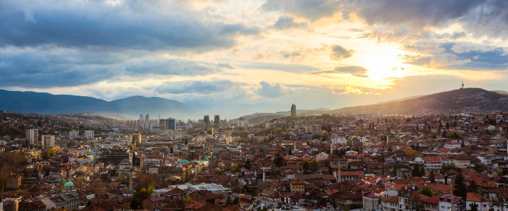

Where East met West, Sarajevo - the place of coexistence and tolerance, emerged. The first settlers date back four thousand years ago. Those settlers left numerous traces in one of the Sarajevo Field settlements called Butmir. The Butmir Culture remains the most important prehistoric Neolithic civilization site in the Balkans. The area which was inhabited in the period between 2400 and 2000 B.C. was discovered in 1893. This significant archaeological finding revealed 95 soil houses, numerous stone weapon, ceramic tools and dishes, human and animal figurines, and other ceramic artifacts. The Butmir Culture was predominantly agricultural, hunting and livestock community. Artifacts found on site indicate crafting skills as well.
The History
The Butmir Culture diminished at the end of the third, and beginning of the second millennium, with the arrival of warrior Illyrian tribe – Daesitiates. Traces of Illyrian tribes dating back to Bronze and Iron Age remain visible at Soukbunar, Debelo brdo, Zlatiste and Kotorac. Archaeological findings indicate rich spiritual life based on their symbiosis with the nature and their belief in nymphs and fairies. A long war between Illyrian tribes and the Roman Empire ended when Bato the Daesitiate’s rebellion against Rome failed. Romans arrived to Bosnia and Herzegovina and resided there for a few centuries. Antique Roman artifacts are mostly found at Ilidza. Aqua S... (most probably Aqua Sulphurae – Sulphuric Spa) is the largest Roman colony. It was a provincial town, and an administrative and cultural center of the Sarajevo Field. The remains illustrate traces of thermal spas with hot water used in healing facilities and luxurious residential villas, underground heating system and several spectacular floor mosaics. Other traces of the Roman Empire in the city are to be found in the downtown area near the Kosevo Brook and Susica Brook, along the Miljacka River.
" When you go to Sarajevo what you experience... is life "
Mike Leigh, English writer and director

Sarajevo, the capital of Bosnia and Herzegovina, was founded by conquerors from Turkey who arrived in 1462 and stayed there for another 415 years. Specifically, it was Isa-Bey Ishakovic, a Bosnian Sanjak-Bey and general, who established the city with the construction of a mosque (today Tzar’s Mosque), hamam, wooden bridge, caravanserai, daire (multifunctional building) and numerous shops. On the left bank of the Miljacka River, he built a court (Konak), administrative seat Saray-ovasi to which the city owes its name (the field in front of the court/saray). Sarajevo was being developed during the Ottoman period to such an extent and speed that, by the end of the 16th century, it had become one of the largest, most beautiful and wealthiest cities of the Ottoman Empire. At the time, the Ottoman Empire was the greatest empire in the world and spread onto three continents. Conquerors from the East infused oriental spirit into the city. This oriental character has ever since existed in the historical part of the town which in addition to mosques has been enriched with cathedrals, churches, and synagogues built in their own unique styles. As the power of the Ottoman Empire declined, Bosnia and Herzegovina is occupied and annexed to the Austria-Hungary from 1878 to 1918. Central European culture and design is mostly represented in the central part of the city. Numerous residential and commercial buildings, administration and authority premises, villas, palaces, churches and monasteries resemble western architecture. This period is known as the age of industrialization, development, social change and education, innovation of bulbs, and the first electrical tram in Europe.
As the power of the Ottoman Empire declined, Bosnia and Herzegovina is occupied and annexed to the Austria-Hungary from 1878 to 1918. Central European culture and design is mostly represented in the central part of the city. Numerous residential and commercial buildings, administration and authority premises, villas, palaces, churches and monasteries resemble western architecture. This period is known as the age of industrialization, development, social change and education, innovation of bulbs, and the first electrical tram in Europe. In addition to all of this, Sarajevo is known as a city where the First World War was triggered with the assassination of the Austro-Hungarian heir to the throne, Archduke Franz Ferdinand and his wife Sophie Hohenberg. With the end of the First World War Bosnia and Herzegovina became a part of the Yugoslav Kingdom (1914-1945), Socialist Yugoslavia (1945-1991). The peak of the socialist era were the 14th Winter Olympic Games held in 1984. Sarajevo was up on its feet to host the best Winter Games at the time as Juan Antonio Samaranch, President of the International Olympic Committee described this extraordinary event. Sarajevo had become member of a small Olympic family. Eight years after the Olympics, Sarajevo was once again under a spotlight. The city was under the siege for 1425 days, which is the longest siege in the history of modern warfare. Those who did not understand nor loved Sarajevo and everything this city represents pointed their hatred and their guns at it. The city survived, as it did many times before. Sarajevo rose from the ashes and regained its old title "European Jerusalem”. Sarajevo won; the city survived and preserved its principles. Today, in a new-old cover, the city welcomes visitors from all over the world. It is the ultimate sight for eyes and the best haven to a soul. Recently, the world’s leading travel magazines and sites such as Lonely Planet, National Geographic Traveler and many others recommend Sarajevo as one of the most exciting tourist destinations in the world.